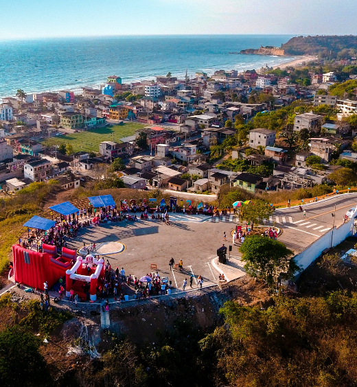

Playa De Montañita
El balneario de Montañita se encuentra ubicado en la parroquia Manglaralto de la comuna Montañita, a 57km de la cabecera provincial, con una longitud de 1854m2 de extensión y 60m aproximadamente de amplitud caracterizado por tener una tonalidad de aguas azules y una arena fina de color beige, un clima tropical con una temperatura de 28 °C ideal para descansar, como para hacer una caminata. Donde podrá relajarse con sus corrientes y fuertes oleajes que llegan al redor de 2,5m de altura siendo perfectas para la práctica de deportes extremos tales como: surf, bodyboard y parasailing, cuenta con torre de salvavidas, servicios de alimento y bebidas e higiénicos.

Iglesia San Isidro Labrador
La Iglesia Católica de San Isidro está ubicada en la calle 15 de mayo frente de la casa comunal, perteneciente al Arquidiócesis de Guayaquil, construida en el año 1941 y viene siendo reconstruida para poder mantener su aspecto y así sus devotos mantengan la fe. La iglesia a su interior tiene capacidad para 300 personas, cuenta con dos estatuillas que hacen representación a San Isidro Labrador y la Virgen de Monserrat. Tiene algunas anécdotas, pero la que más llama la atención es la del comunero que encontró a un santo en forma de estatua; era tan pequeña y mediante pasaba el tiempo fue creciente hasta que un día se cayó y se rompió a la altura del cuello, se decía que era un mal augurio.

Monumento Al Surfista
El monumento al surfista es un atractivo cultural que se encuentra ubicado camino a la punta de la comuna Montañita, sobre la carretera principal de la ruta del Spondylus, en una pequeña plazoleta construida en el año 2013 cuenta con una altura de 6,50m, de los cuales 4,20m es la medida del personaje. La estatua fue construida de hormigón armado y hierro para rendir homenaje al surfista que llega a esta hermosa comuna debido a sus aguas con fuertes oleajes que se convierten en una de las playas idóneas para los amantes a la practicar del deporte acuático.

Mirador De Montañita
El Mirador de Montañita es un atractivo mixto está ubicado en una de las primeras cuadras al inicio de la comuna en la vía que conduce al cementerio. Este atractivo cuenta con las letras del nombre de la comuna “Montañita” y dentro de ellas una especificación de lo que caracteriza a la comuna, contiene asientos y unas barandas para marcar el límite hasta donde se puede llegar y así poder apreciar las excelentes vistas panorámicas que esta ofrece. Este lugar refleja paz y se puede apreciar el inmenso mar que la rodea.

- 
-

.jpg)
.jpg)
.jpg)
Calle De Las Artesanías
Montañita sin duda es una comunidad que cada día innova y vela por el bienestar de sus visitantes y turistas, por tal razón se ha implementado un espacio denominado las calles de las artesanías, este lugar se encuentra a un costado del malecón, atrás de la Iglesia San Isidro Labrador. En el sitio se han adecuado pequeñas casetas rústicas elaboradas de caña y madera, aquí se ofertan diferentes tipos de artesanías con materia prima que se encuentran dentro de las zonas cercanas, con ellas se pueden elaborar diferentes manualidades que se ofrecen en puestos artesanales tales como: lámparas, sombreros, gorros, adornos para el hogar, collares, pulseras, aretes, entre otras. Se puede mencionar que Montañita siempre nos sorprende con algo novedoso, algo que atrae y llama la atención del turista logrando conquistar y enamorar a todo aquel que pisa esta hermosa tierra.

Calle De Los Desayunos
La “Calle de los Desayunos”, es el lugar ideal donde podremos encontrar todo tipo de desayuno a la elección del turista, este sector está conformado por distintos puestos de comida que podrán satisfacer las necesidades de los visitantes, desde un desayuno tradicional hasta un desayuno especial; son las especialidades de nuestra cultura gastronómica de la comuna Montañita, la calle de los desayunos no solo funciona en las mañanas al contrario distintos puestos serán encontrados abiertos en diferentes horarios del día y noche. No te olvides de visitar la calle de los desayunos y degustar de la gastronomía que te ofrece la comuna de Montañita.


Calle De Los Cocteles
La calle de los cócteles en Montañita es un lugar lleno de un ambiente nocturno con buena música en dónde se sirven bebidas alcohólicas y no alcohólicas, con verdaderos maestros que preparan cócteles clásicos y especiales de los bartenders de la localidad. En esta calle se puede disfrutar de esta clase de bebidas con amigos, familiares y extraños que se vuelven conocidos.

Calle De Las Luces
La calle de las luces sin duda se ha vuelto un atractivo digno de ver hecho por la mano del hombre, esta idea surgió de unos jóvenes tras la pandemia para adornar la comuna en la época navideña por lo que dio un impacto positivo a la misma. Está ubicada en el corazón de la comuna, es maravilloso ver como algo tan sencillo como las 250 esferas logro captar la atención de los turistas que hoy en día es un buen lugar para tomarse fotos.

Calle De Los Paraguas
La calle de los paraguas es uno de los sitios que cautiva a los turistas por su variedad de sombrillas de color rosado y amarillo que están colgadas en toda esa avenida, pues es sin duda unas de calles emblemáticas de la comunidad y muy concurridas; ya que además de ser atractivo a la vista, también se puede encontrar una variedad de locales de comidas rápidas y bebidas. En las noches se destacan mucho más ya que se enciende en cada paragua un foco dando luminosidad atractiva al lugar.

Calle De Los Ceviches
La “Calle de los ceviches” es la calle donde podremos encontrar las carretas que ofertan las distintas especialidades de ceviche, desde el ceviche de pescado, ceviche de camarón, ceviche de concha, ceviche de pulpo, ceviche de calamar, etc. Este sector se encuentra en la segunda calle de la comuna Montañita, es una asociación que se mantiene organizada ya que ciertas carretas satisfacen a los comensales en la playa mientras que otro grupo se reúne para brindar su servicio en la calle antes mencionada. Existen 12 carretas las que se mantienen en un solo margen es decir mantienen un mismo precio, cuentan con el conocimiento de la clase de ceviches y lo más importante te permiten compartir y degustar los frutos marinos recién salidos del mar. La presentación del plato y decoración de sus puestos hacen que el turista sea atraído a este sector.

Barrio Las Flores
La avenida de “Las Flores” en Montañita es un lugar que hace honor a su nombre, está avenida está decorada con hermosas y coloridas flores, murales hechos por la comunidad donde muestran el talento y las ganas de mejorar la presentación de sus calles, detalles decorativos que resalta la belleza natural; para los amantes de la naturaleza, pasar por esta avenida sin duda logrará hacerte sentir en un ambiente acogedor, el Barrio Las Flores hace un pequeño homenaje a los amantes de las flores. Si visitas Montañita no puedes irte sin primero haber pasado por el recorrido de los barrios, dónde encabeza la lista el Barrio Las Flores, ideal para tomarse fotos con su pareja, familia, solo o en compañía de amigos.

Barrio Las Palmeras
En la avenida “Las Palmas” de principio a fin este barrio resalta la calidez y el amor que tiene la comunidad de Montañita hacia sus visitantes, la decoración en este barrio parte de bancos y maceteros, los cuales gran parte de estos son realizados con material reciclado, no solo tiene ese toque rústico y colorido, el barrio tiene alojados a distintos artesanos que hicieron que el barrio luzca fenomenal gracias al arte que logran crear del árbol de muyuyo y bejuco, adicional a esto nos encontramos con frases que destacan por su picardía en el suelo de la avenida Las Palmas. Ideal para visitar en pareja, familia o amigos. Este barrio cuenta con la iniciativa de sus habitantes para lograr así resaltar no solo la belleza de Montañita sino también la creatividad de su gente.


Barrio La Punta
“La Punta” es un barrio pintoresco dónde podremos encontrar murales llenos de imágenes coloridas y representativas de la comuna Montañita, este sector se denomina La Punta porque se encuentra al final de Montañita, en este barrio podremos encontrar restaurantes con diferentes especialidades gastronómicas, alojamiento desde hoteles a hostales, en este sector habita la mayoría de extranjeros que decidieron quedarse y hacer su vida en la comuna, por esta razón podremos encontrar que el Barrio La Punta cuenta con academias de surf, escuelas de inglés y español y lugares de relajación. Un lugar ideal para caminar y tomarse fotografías en los coloridos murales, en compañía de amigos o familiares.